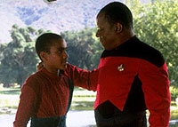
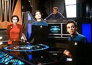
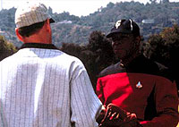
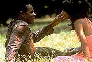
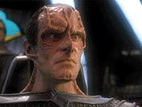

|
MANCHETE
DO EPISDIO
Piloto d introduo sensvel e coerente
para personagens e ambiente de DS9
Prximo
episdio
Sinopse:
Data Estelar: 46379.1.
 Durante
a batalha de Wolf 359, o comandante Benjamin Sisko perdeu sua
esposa, tendo sido obrigado a cuidar sozinho de seu nico filho,
Jake. Trs anos depois, ele ordenado a seguir para Deep
Space Nine, uma velha estao de minerao Cardassiana
em rbita de Bajor, planeta que passou as ltimas dcadas sob a
cruel jurisdio de Cardssia.
A Federao administraria a estao atendendo a um pedido do
governo provisrio bajoriano, para ajudar a proteger e a
reconstruir o planeta devastado.
Aps se encontrar com a lder espiritual local, Kai Opaka, Sisko
sai procura do "Templo Celestial dos Profetas". O que
ele encontra um buraco de verme, a "Fenda Espacial",
que liga a regio de Bajor ao quadrante Gama, do outro lado da galxia.
No interior do fenmeno, vivem estranhos aliengenas. Aps contat-los,
o comandante Sisko consegue fazer com que a passagem permanea
aberta em definitivo, trazendo nova importncia econmica e
cultural para Bajor e Deep Space Nine.
Comentrios:
"Emissary" um grande episdio, no s como
piloto para uma nova srie, mas tambm como uma grande histria
de fico cientfica.
No plano filosfico, um dos fortes de Jornada nas Estrelas, o episdio
apresenta alguns temas interessantes. Em primeiro lugar, levanta uma
questo no melhor estilo de Erich von Daniken, autor do livro "Eram
os Deuses Astronautas?". Nesta obra, Daniken prope a
teoria de que muitas das divindades existentes nos diversos mitos e
religies da Terra sejam baseados na visita de seres
extraterrestres ao planeta durante a Antiguidade.
Da mesma maneira, "Emissary" mostra o
impacto que pode ter um buraco de verme ao lado de um planeta,
habitado por estranhos seres aliengenas. a realidade inspirando
a religio.
 No
difcil entender por que os bajorianos vem os aliengenas do
"Templo Celestial" - como eles chamam a Fenda Espacial -
como "Profetas" - trata-se de uma espcie que no
percebe o tempo linearmente, como o fazemos.
Para quem no conhece a noo de tempo, no h passado, nem
presente e muito menos futuro. Tudo definido como "existncia".
Para algum nessas condies, no difcil conhecer e
antecipar o futuro, meio de vida de um profeta.
A idia, alm de dramaticamente interessante, no um delrio
de pseudo-cincia. Embora improvvel, possvel a existncia
de seres sem a noo que ns temos de tempo, j que este no
passa de uma impresso de uma quarta dimenso em um ambiente
tri-dimensional. Seres quadridimensionais poderiam facilmente
eliminar o tempo como uma noo distinta do espao em si. Ir ao
passado ou ao futuro seria o mesmo que ir para a esquerda ou para a
direita.
A discusso entre Sisko e os Profetas simplesmente sensacional,
pois define a condio humana a partir de um ponto de vista
singular: nosso maior parmetro de definio a linearidade, ou
seja, a incapacidade de transcender o presente.
Para explicar isso, Sisko usa como exemplo um jogo de beisebol. De
fato, a graa, como ele explicou, est em que no sabemos o que
vai acontecer na prxima jogada. Por isso, somos obrigados a
refletir, na tentativa de superar nossas deficincias e antecipar
todas as situaes possveis. a falta de conhecimento do
futuro que nos obriga a raciocinar!
Saindo do campo da reflexo e voltando ao campo da construo dos
elementos da srie, vemos que o episdio no perde sua riqueza.
Alm da introduo consistente e sensvel de todos os seus
personagens regulares, fica a certeza de que a ida de Sisko a Deep
Space Nine no apenas uma obra do acaso.
 O
encontro de Sisko com os Profetas, seres que fazem perguntas como
"quem voc", "o que voc" e "por
que voc existe aqui" parecem indicar o tom para uma srie
com grande foco em seus personagens, suas motivaes, crenas,
dilemas e conflitos internos.
O eco disso est no prprio episdio. Em 90 minutos, descobrimos
a essncia de Odo - a busca de outros transmorfos -, a relao
conflituosa de Kira Nerys com o governo provisrio de Bajor, Cardssia
e a Federao, o esprito aventureiro do doutor Bashir, a
natureza simbitica de Jadzia Dax e a relao de amor e dio
entre Quark e Odo.
Desde suas primeiras horas, Deep Space Nine j
prometia aventuras dignas do nome de Jornada nas Estrelas
e que iriam alm, navegando em guas que nem a Srie Clssica,
nem A Nova Gerao ousaram transitar.
Citaes:
Odo - "You are a
gambler... and a thief!"
("Voc um jogador... e um ladro!")
Quark - "If I am, you haven't been able to prove it for
four years!" ("Se eu sou, voc foi incapaz de
provar em quatro anos!")
Kai Opaka - "I can
not give you what you deny yourself."
("No posso dar o que voc nega a si mesmo.")
Bashir - "This is
where adventure is... this is where heroes are made... right here...
in the wilderness."
("Aqui onde est a aventura... aqui onde os heris so
feitos... bem aqui... na regio selvagem.")
Kira - "This wilderness is my home."
("Essa regio selvagem o meu lar.")
Trivia:
 O episdio abre com cenas da batalha de "Wolf 359" que
foi referida, mas no mostrada, no episdio de A Nova Gerao
"The Best Of Both Worlds".
O episdio abre com cenas da batalha de "Wolf 359" que
foi referida, mas no mostrada, no episdio de A Nova Gerao
"The Best Of Both Worlds".
Presena de Patrick Stewart, como Jean Luc Picard e como Locutus, e
da Enterprise-D.
A introduo do personagem Gul Dukat (vivido por Marc Alaimo),
antigo comandante de DS9 (naquela poca ainda
chamada de Terok Nor) quando da ocupao Cardassiana. Dukat o
grande vilo da srie.
A introduo de Morn (Mark Allan Shephard), o mascote da srie,
Mark nunca proferiu uma linha de roteiro sequer, sendo por isto
sempre pago como um "extra", apesar de ser uma piada
recorrente na srie o fato de Morn "falar demais", mas
sempre fora de cena.
A introduo do sobrinho de Quark: Nog (vivido por Aron
Eisenberg). A introduo do irmo de Quark, Rom (vivido por Max
Grodnchik). De fato, Armim e Max foram os finalistas para o papel
de Quark, Armim ficou com o papel de Quark e Max com o de Rom.

A presena de Felecia M. Bell como Jennifer Sisko, que voltaria a srie
ainda por mais duas vezes como a contraparte de Jennifer do Universo
do Espelho, visto pela primeira vez no episdio da Srie
Clssica, "Mirror, Mirror".
Presena de J.G.Hertzler (que depois seria bem conhecido como o
General/Chanceler Martok), como o capito Vulcano da Saratoga.
Os runabouts (traduzidos por "exploradores") "Rio
Grande" (o famoso "runabout indestrutvel", que
sobreviveu s sete temporadas da srie), "Yangtzee
Kiang" e "Ganges" so introduzidos neste episdio.
Introduo da personagem Kai Opaka (vivida por Camille Saviola),
que voltaria por mais trs vezes durante a srie.
Picard diz claramente que a misso de Sisko promover a entrada
de Bajor na Federao sem violar a diretriz primeira.

Dos nove "Orbs"("Lgrimas dos Profetas")
enviados pelos Profetas, oito esto em poder dos Cardassianos,
segundo Kai Opaka.
"Fenda Espacial" o mesmo que o "Templo
Celestial" e os "Aliengenas da Fenda Espacial" so
conhecidos pelos Bajorianos como os "Profetas".
Ficha
tcnica:
Histria de Rick Berman e
Michael Piller
Roteiro de Michael Piller
Direo de David Carson
Exibido em 04/01/1993
Produo: 001
Elenco:
Avery Brooks como
Benjamin Lafayette Sisko
Ren Auberjonois como Odo
Nana Visitor como Kira Nerys
Colm Meaney como Miles Edward O'Brien
Siddig El Fadil como Julian Subatoi Bashir
Armin Shimerman como Quark
Terry Farrell como Jadzia Dax
Cirroc Lofton como Jake Sisko
Elenco convidado:
Patrick Stewart como Jean-Luc Picard
Camille Saviola como kai Opaka
Felecia M. Bell como Jennifer Sisko
Marc Alaimo como gul Dukat
Joel Swetow como gul Jasad
Aron Eisenberg como Nog
Stephen Davies como oficial ttico da Saratoga
Max Grodnchik como Rom
Steve Rankin como oficial Cardassiano
Lily Mariye como oficial do OPS
Cassandra Byram como oficial de manobra
Joah Noah Hertzler como capito Vulcano
April Grace como chefe de transporte da Enterprise
Kevin McDermott como um aliengena
Parker Whitman como um oficial Cardassiano
William Powell-Blair como um oficial Cardassiano
Frank Owen Smith como Curzon Dax
Lynnda Ferguson como Doran
Megan Butler como tenente
Stephen Rowe como um monge
Thomas Hobson como jovem Jake Sisko
Donald Hotton como um monge
Gene Armor como burocrata Bajoriano
Diana Cignoni como uma garota de Dabo
Judi Durand como voz do computador Bajoriano
Majel Barrett como voz do computador da Federao
Prximo
episdio
|